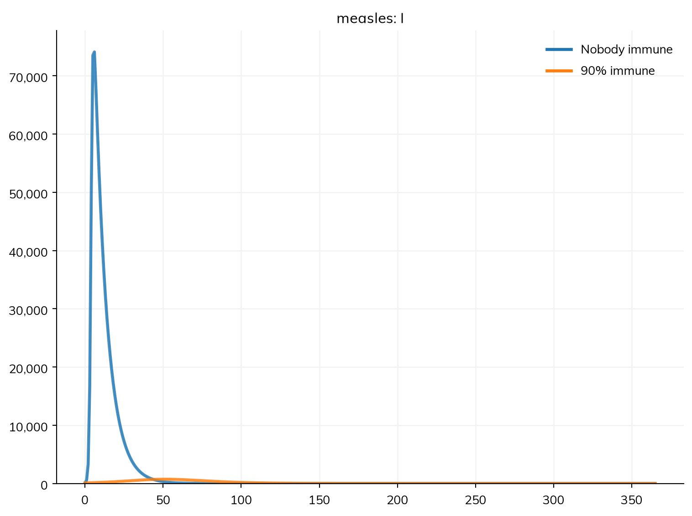
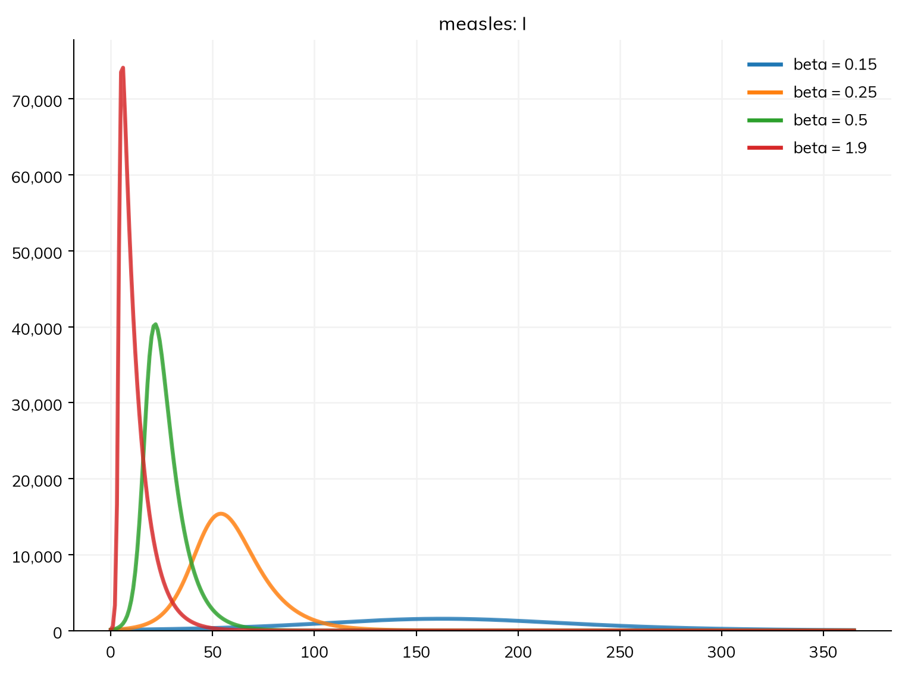
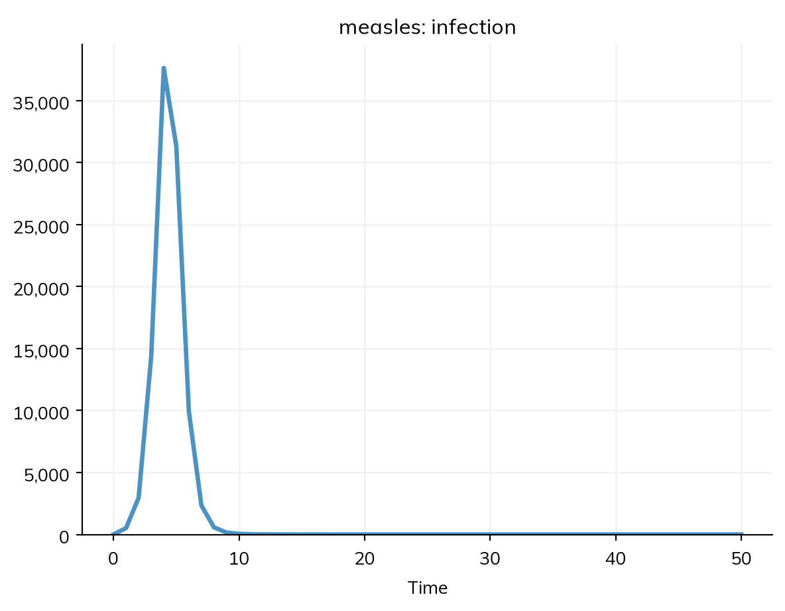
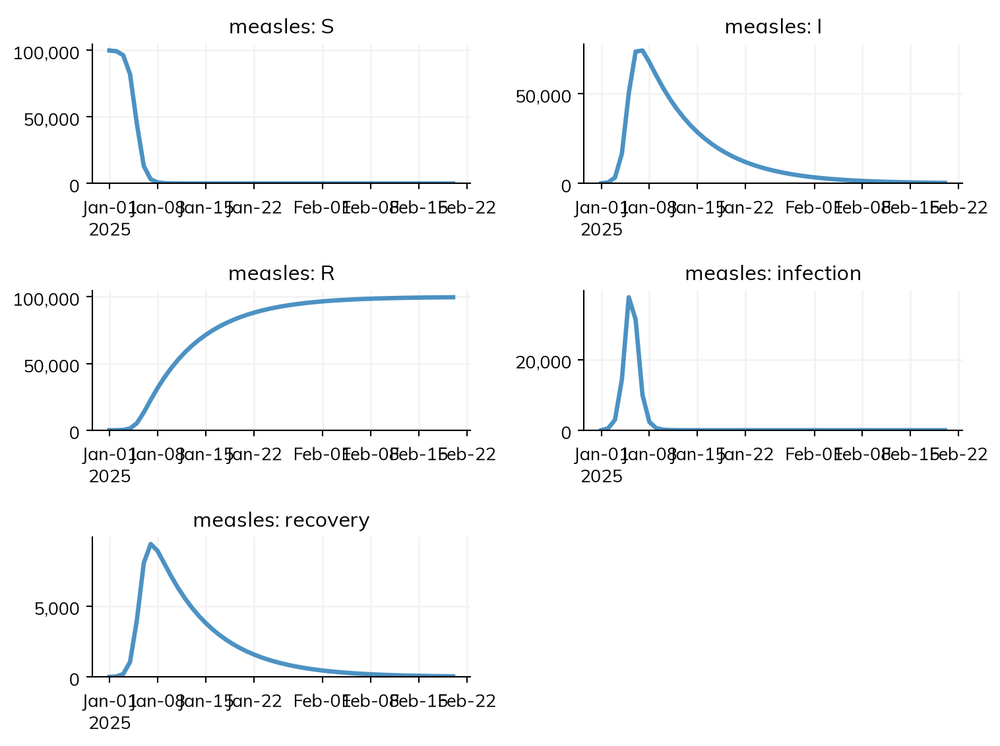

Tutorial 1 wrote an SIR model of measles and ran it. This tutorial goes through the same model again, in more depth, to answer a question that matters for any outbreak: what decides how many people are infected? Along the way, it covers what each line of the model means, how to say who starts where, how to change a parameter and compare runs, how to read results, how Starsim handles time, and how to save a model and its results.
By the end of this tutorial, you will be able to:
explain each line of the model in the terms of an SIR model;
start an outbreak in a population that is partly immune;
change a parameter and see how it changes R0 and the size of the outbreak;
get numbers out of the results, and save them;
set the units, dates, and time step of a run.
What the model says
This is the model from Tutorial 1: measles in a town of 100,000 people, as an SIR model, with a transmission rate β of 1.9 per day and an infectious period of 8 days, run for 50 days.
import starsim as ssS, I, R = ss.states('S I R')infection = S >> I @1.9*I # β = 1.9 per dayrecovery = I >> R @ ss.days(8) # Infectious for 8 days on averagemeasles = ss.Disease(infection, recovery, init_prev=0.001)sim = ss.Sim(measles, total_pop=100_000, stop=ss.days(50))sim.run()sim.plot()
Sim: measles, 100,000 people, as an ODE, days 0 to 50
measles: R0 = 15.2, with 100 infectious at the start
Done in 0.0037 s; measles: 99,900 infections; at most 74,112 infectious, on day 6
States.ss.states('S I R') makes three states, the compartments of the model. A state is a group of people (or, as agents, a label each person carries). The order matters in one way: the first state, here S, is where people start unless they are put somewhere else.
Transitions.S >> I @ rate is a transition from S to I at a rate. The rate is a per capita rate: the rate at which each person in S moves to I. For an infection, this per capita rate is the force of infection, λ = β I / N: β times the share of people who are infectious. 1.9*I says exactly this, since a state in a rate stands for the share of people in it. Multiplied by the number of susceptible people, it gives the number of infections per day, β S I / N. Because I appears in the rate, Starsim knows that this transition is a transmission, and that people in I are infectious.
The same transition can also be written as the whole flow, as many textbooks write it: with N = S + I + R, S >> I @ 1.9*S*I/N is the same model. Both are frequency-dependent transmission: what matters is the share of people who are infectious, so a larger town has more infections but not a faster epidemic. For density-dependent transmission, where what matters is the number of infectious people (as for some diseases of animals), use the number in the state, I.n, as in S >> I @ beta*I.n. Then β is per infectious person, so it is much smaller, and R0 (β N × the infectious period) grows with the size of the population. Starsim prints R0 and counts infections for either form.
Durations.I >> R @ ss.days(8) has a duration instead of a rate: people spend 8 days in I on average, which is the same as a per capita rate of recovery of 1/8 per day. As in the standard SIR model, the time each person spends infectious is exponentially distributed, with this mean. Tutorial 3 shows how to give other distributions.
The disease.ss.Disease puts the states and transitions together, with how the outbreak starts (below). It takes its name, measles, from its variable, and so do the transitions (infection and recovery), which is how their results are named.
How the outbreak starts
By default, everyone starts in the first state, S, except those who start infected. There are three ways to say who starts where:
Argument
Meaning
init_prev=0.001
0.1% of people start infected (the initial prevalence), in the state that an infection leads to: I here, but E in a model with a latent period (Tutorial 3)
init=dict(I=0.001, R=0.9)
The share of people who start in each state, for any states
init_n=dict(I=10)
The number of people who start in each state
Use whichever says what you mean; naming the state (init or init_n) makes it clear whether the people introduced are already infectious.
Measles is a disease that most people are immune to, by vaccination or from an earlier infection. Suppose 90% of the town is immune, and 0.1% are infectious. To compare this with the town where nobody is immune, run both for a year with ss.parallel(), as in Tutorial 1:
measles_immune = ss.Disease(infection, recovery, init=dict(I=0.001, R=0.9), name='measles') # Named measles too, so the two runs' results can be comparednobody = ss.Sim(measles, total_pop=100_000, stop=ss.days(365))immune = ss.Sim(measles_immune, total_pop=100_000, stop=ss.days(365))msim = ss.parallel({'Nobody immune': nobody, '90% immune': immune})msim.plot('measles.I')
MultiSim: 2 runs of 2 scenarios (Nobody immune, 90% immune)
Done in 0.42 s

With only 10% of people susceptible, each infectious person infects 15 × 0.1 ≈ 1.5 others on average. This is the reproduction number at the start, which the run prints after R0 (R = 1.52 at the start, with 10% susceptible): R0 itself is for a population in which everyone is susceptible, and is still 15.2. So the outbreak still grows, but slowly: it peaks at about 700 people infectious at once rather than 74,000, and infects about 6,000 people over the year instead of almost everyone. An outbreak can only grow when the reproduction number is above 1, so to stop measles spreading, more than 1 − 1/R0 = 1 − 1/15 ≈ 93% of people must be immune: the herd immunity threshold. Try R=0.95 to see an outbreak that dies out.
Changing parameters
Starsim takes the parameters of a disease from its transitions: β from the rate of infection (named beta, since it multiplies a state in a transmission), and the infectious period from the duration of recovery (named dur_I, the mean time in I, as in the equations of Tutorial 1). They are listed in the disease’s pars:
measles.pars
Pars(beta=par(1.9), dur_I=par(days(8)))
To run the model with another value, give the sim pars=, with the new values by name. This changes the value in that sim only, and leaves measles as it was. (sim.new(pars=dict(beta=0.5)) does the same, starting from an existing sim.) Here is the model with four values of β, from 0.15 to 1.9 per day, run for a year:
MultiSim: 4 runs of 4 scenarios (beta = 0.15, beta = 0.25, beta = 0.5, beta = 1.9)
Done in 1.3 s

The lower β is, the later and lower the peak. To see how many people are infected in the end, read R0 and the number recovered from each run (msim.sims has the sims, in order):
The share infected rises steeply with R0 at first, then levels off: with an R0 of 2, 80% of people are infected, and above 4, almost everyone is. These are the values of the classic final size relation for an SIR model, z = 1 − exp(−R0 z), where z is the share infected. A model with an R0 above about 5 is, for this purpose, not sensitive to the exact value of R0, which is why measles infects almost everyone in a population with no immunity. So the answer to this tutorial’s question is: R0, and how many people are immune to begin with. β and the infectious period matter only through R0, and they decide how fast the outbreak happens, not how big it is.
Tutorial 3 shows how to name parameters yourself, and give them a range of plausible values for calibration. For more on parameters, see Parameters in the user guide.
Results
A run’s results are in sim.results, by module, so those of the disease are in sim.results.measles:
Sim: measles, 100,000 people, as an ODE, days 0 to 50
measles: R0 = 15.2, with 100 infectious at the start
Done in 0.0027 s; measles: 99,900 infections; at most 74,112 infectious, on day 6
A state (S, I, R) is the number of people in it at each time point. This is the prevalence, as a count.
A transition (infection, recovery) is the number of people who made it in each step: a flow. infection is the incidence of new infections, per day here.
Each result is a time series, with numbers that can be read off it:
print('Peak number infectious:', round(res.I.max()))print('Total infections:', round(res.infection.sum()))print('Recovered by the end:', round(res.R[-1]))
Peak number infectious: 74112
Total infections: 99900
Recovered by the end: 99683
To count infections, sum the flow infection, not the state I: summing I would count each person once for every day they are infectious. res.infection.cum is the running total of a flow (the cumulative incidence). Any result can be plotted on its own:
res.infection.plot()

For a table of every result at every time point (a pandas DataFrame), use sim.to_df(), or res.infection.to_df() for one result:
df = sim.to_df()df.head()
time
measles_S
measles_I
measles_R
measles_infection
measles_recovery
alive
new_deaths
new_emigrants
cum_deaths
0
0.0
99900.000000
100.000000
0.000000
0.000000
0.000000
100000.0
0
0
0
1
1.0
99378.791293
586.794478
34.414229
521.208707
34.414229
100000.0
0
0
0
2
2.0
96414.220043
3352.122056
233.657902
2964.571250
199.243672
100000.0
0
0
0
3
3.0
82070.743093
16635.911072
1293.345836
14343.476950
1059.687934
100000.0
0
0
0
4
4.0
44430.971429
50238.533243
5330.495329
37639.771664
4037.149493
100000.0
0
0
0
Results in the user guide covers results in full, including those of many runs.
Time
Units. Every run has a unit of time. Here it is a day, which Starsim takes from the durations in the model (ss.days(8)). A number with no unit, such as β = 1.9, is in the same unit: 1.9 per day. To give a rate its unit explicitly, write it with one: ss.perday(1.9) is the same rate as 1.9 here, and ss.perweek(13.3) is nearly the same again. Durations can be given in any unit (ss.days(), ss.weeks(), ss.months(), ss.years()), and rates and durations in different units are converted to the unit of the model.
If a model has values in more than one unit, such as a duration in years as well as durations in days (Tutorial 3), Starsim can’t tell which unit the bare numbers (such as β = 1.9) are in, and says so. Then either give them units, or say which unit the model is in, e.g. ss.Sim(..., unit='day').
Start and stop.stop=ss.days(50) runs the model for 50 days from day 0. A run can also start and stop on dates, so that results are dated:
Sim: measles, 100,000 people, as an ODE, 2025-01-01 to 2025-02-20
measles: R0 = 15.2, with 100 infectious at the start
Done in 0.002 s; measles: 99,900 infections; at most 74,112 infectious, on 2025-01-07

Steps, people, and agents. A run moves forward in steps of time, dt, which is one of the unit by default: here one day. For the ODE, the step is only how often results are recorded, since the equations are solved more finely in between. For agents, the step matters more, since each agent moves at most once per step. Tutorial 1 showed that this outbreak is too fast for a step of a day as agents. Here are agents with a step of a day and of a quarter of a day, with the ODE:
sim.new() makes a new sim from an existing one, with whatever is given changed (here, the step); verbose=0 turns off the lines a run prints. With a step of a quarter of a day, the peak comes on day 6.75, close to the ODE (day 6), rather than on day 9. A good check of any model run as agents is to halve the step and see whether the results change; sim.check_dt() does this and reports the difference.
The sims run together with ss.parallel(), as above. Since they have different steps, msim.plot() plots each against its own time points; what needs their results put together as runs of one thing, such as the median across runs, raises an error saying so.
total_pop is the number of people in the population. When the model runs as agents, n_agents is the number of agents simulated, and each stands for total_pop / n_agents people (here 10). Results are always in people, not agents. More agents give results that vary less by chance, but take longer to run; 10,000 is often enough to see the shape of an epidemic, and more are needed to follow small numbers, such as the last few cases of an outbreak. Time in the user guide has more on units, dates, and steps.
Saving and loading
sim.save() saves a sim to a file, and ss.load() loads it again:
By default, this leaves out the people and anything else that is only needed to run the sim, so that the file is small; the model and results are kept. To save everything, for example to continue a run later, use sim.save('my-measles.sim', shrink=False).
To use the results in another program, such as a spreadsheet, save them as a table:
df = sim.to_df()df.to_csv('my-measles.csv')
Exercises
A town of 2,000 people has had no measles for many years, and 70% of its people are immune. Five people arrive with measles. Using init and init_n, model the outbreak over a year. How many people are infected? Is the reproduction number at the start above or below 1?
Using the final size relation, a model with R0 = 1.5 should infect about 58% of people. Choose β to give R0 = 1.5 with an infectious period of 8 days, run the model for long enough for the outbreak to end, and check.
Change the model to density-dependent transmission (I.n), choosing β so that R0 is still 15 in a town of 100,000. Then run it in a town of 10,000 and of 1,000,000. How does the outbreak change with the size of the town, and how does this differ from the frequency-dependent model?